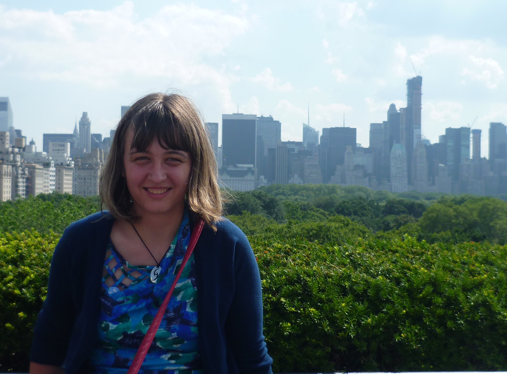

About Me
Welcome to my website! My name is Adina and I am currently a Senior Software Engineer at
Bloomberg LP in New York City. I am part of the
Asset Investment Management team.
Until June 2017, I was a Software Engineer at
Cerner Corporation in Kansas City, MO. Since I try to keep my Resume and LinkedIn more up-to-date than this website, check out my
Resume and
my
LinkedIn.
I received my Master's Degree in Computer Science from
Washington University in St Louis (Wash U) in August 2014. Between August 2011 and August 2014, I conducted
research in computer vision at Wash U, where I was advised by professor
Robert Pless.
I spent the Summer 2014 semester in Boston, interning at
Mitsubishi Electric Research Laboratories (MERL). There, I worked in the Spatial Analysis group, on an indoor 3D reconstruction algorithm
using images and 3D models.
I received my Bachelor's Degree in Computer Science from
Bard College (a small, private liberal arts college in upstate New York) in May 2011. At Bard, I
was involved in the research activities of the Bard Laboratory for Algebraic and Symbolic Computation. I also took part, for a semester, in the
Bard Globalization and International Affairs Program in New York City (BGIA). As part of the program, I was a Web Communication Intern at
Human Rights First (HRF).
During the summers of my freshman, sophomore and junior years at Bard, I participated
in various
Research Experience For Undergraduates (REU) programs. The first two summers I was at the
University of Houston, performing
research on thermal imaging for stress recognition. The last summer I went to
Clemson University, where I performed research on distance estimation in virtual environments.
You can read more in my
resume and in the
other projects section of this website.
Other than that, I am originally from
Romania and my freshman year of college was the first time I set foot on American soil. My biggest passion is probably traveling, and I want to see as much of the world as I can. Other things I enjoy are painting, reading, creative writing, ice-skating,
biking, watching movies and hanging out with friends. I also love meeting diverse people and learning cool things about them and their cultures.